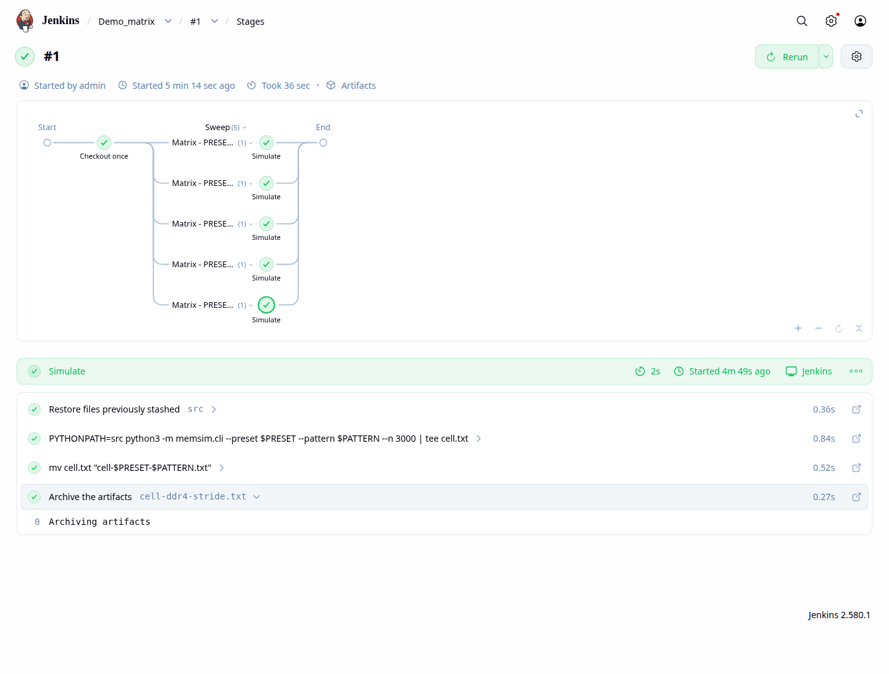
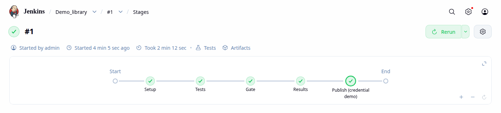
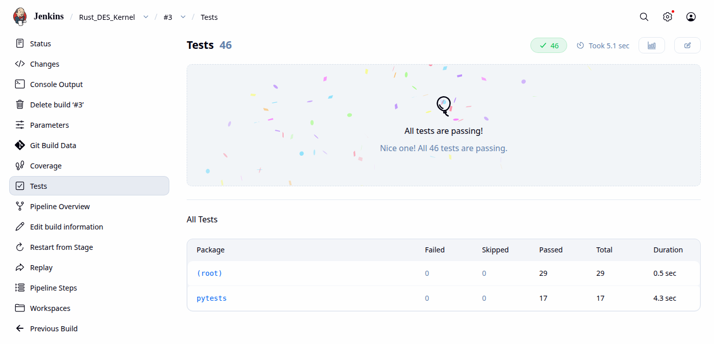
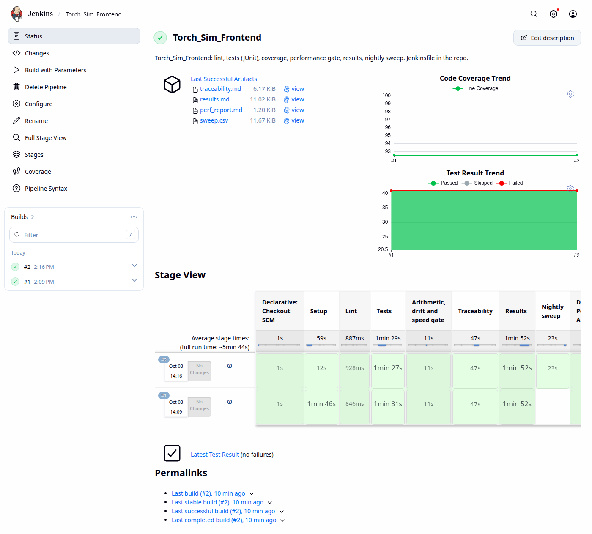

Continuous integration for simulators, from real pipelines that ran: declarative and scripted Jenkinsfiles, agents and labels for tools and licences, matrix builds as parameter sweeps, shared libraries, JUnit and coverage reports, nightly regressions, exact, speed and drift gates, credentials, the declarative linter, and how Jenkins and GitHub Actions divide the work.
Concepts used here, and where they are explained. Each links to a glossary entry: this series glossary, or the glossaries of LLM Inference Simulators and FHE Accelerator Simulators for concepts those series already explain.
A simulator's product is its answers. A change can leave every unit test green and still move a bootstrap time by 3% or slow the nightly sweep to half speed. CI for a simulator therefore checks four things on every change: that it builds and passes its tests, that its answers agree with references, that its performance has not regressed, and that it produces the results the decks and reports quote.
Each code repository in this series has a Jenkinsfile, and every one of them was run on a local Jenkins (2.580.1, in user space). These are the pipelines:
| Repository | Stages | Gate |
|---|---|---|
| Rust_DES_Kernel | lint, Rust tests, Python differential tests, coverage, benchmarks, results, nightly sweep | criterion benchmarks against a baseline |
| RTL_CoSim_NTT | lint, model tests, RTL tests on Verilator and on Icarus, results, nightly seed sweep | exact RTL cycle counts |
| Memory_System_Sim | lint, tests, results, nightly load sweep | exact efficiencies plus requests per second |
| SystemC_Accelerator_Model | build, GoogleTest (Release and ASan+UBSan), agreement with SimPy, results, nightly quantum sweep | wall clock |
| Torch_Sim_Frontend | lint, tests, traceability matrix, results, nightly sweep | exact FLOPs and weight bytes, drift report, capture time |
The Jenkins here runs on one machine, is reachable only from it, and has no separate agents. Slide 12 compares it with the GitHub Actions workflows that run the same tests on every push.
A declarative pipeline is a fixed structure (pipeline, agent, parameters, stages, post) that Jenkins can validate before it runs and draw as a stage graph. A scripted pipeline is Groovy code inside node { }, with loops, maps and try/catch. Here is the same sweep as a scripted pipeline that also handles a failure on purpose:
node('sim') {
stage('Checkout') {
git url: 'https://github.com/BrendanJamesLynskey/Memory_System_Sim.git', branch: 'main'
}
stage('Sweep') {
def cells = [:]
for (preset in ['ddr4', 'hbm']) {
for (pattern in ['stream', 'random']) {
def p = preset, q = pattern // capture loop variables for the closure
cells["${p}/${q}"] = {
sh "PYTHONPATH=src python3 -m memsim.cli --preset ${p} --pattern ${q} --n 3000"
}
}
}
parallel cells
}
stage('A failure that is handled') {
try {
sh 'PYTHONPATH=src python3 -m memsim.cli --preset no-such-preset'
} catch (err) {
echo "expected failure, handled: ${err}"
currentBuild.description = 'sweep ok; bad preset rejected'
}
}
}| Declarative | Scripted | |
|---|---|---|
| Checked before running | Yes: the linter (slide 11) and the editor | Only when it runs |
| Logic | when, matrix, post conditions; script { } blocks for the rest | Any Groovy (in the sandbox) |
| Use it for | Almost every repository pipeline | Generated stages, complex orchestration, and inside shared libraries |
Its log shows the four parallel branches and the handled failure: expected failure, handled: hudson.AbortException: script returned exit code 2.
The controller schedules; agents run steps. A stage asks for an agent by label (agent { label 'sim' }), so a pipeline says what it needs, not which machine to use. For hardware and simulation teams, labels usually encode tools and licences:
verilator, vivado-2025.2, systemc, gpu. A simulator that needs a commercial RTL simulator runs only where its licence and install are.Here there is one built-in node labelled sim, with one executor, run under systemd-run -p MemoryMax=6G: on an 8-core, 15 GB machine, two heavy builds at once have crashed it before.
In a declarative environment { } block, env.HOME is null in Groovy, params are null on a job's very first build, and a PATH set there did not reach the sh steps. RTL_CoSim_NTT's fix resolves its tools in each step's own shell:
environment {
// params are null on a job's very first build, before Jenkins has read the parameters block
VR = "${params.VERILATOR_ROOT ?: ''}"
MAKEFLAGS = '-j2'
// Jenkins does not pass a PATH set here to sh steps, and HOME is only known to the shell,
// so each step that needs Verilator sets it up itself
VPATH = 'export VERILATOR_ROOT="${VR:-$HOME/.local/opt/verilator-deb/root/usr/share/verilator}"; [ -d "$VERILATOR_ROOT" ] && export PATH="$VERILATOR_ROOT/bin:$PATH" || unset VERILATOR_ROOT; '
}And name such helpers carefully: Rust_DES_Kernel's first version of this fix called its helper CARGO, which cargo and maturin read as the path of the cargo binary, and its build failed until it was renamed WITH_CARGO.
A declarative matrix runs the same stages for every combination of its axes, as parallel branches, minus the excludes. For a simulator, the axes are configurations: memory presets, access patterns, model sizes, simulator back ends.
stage('Sweep') {
matrix {
agent { label 'sim' }
axes {
axis { name 'PRESET'; values 'ddr4', 'hbm' }
axis { name 'PATTERN'; values 'stream', 'random', 'stride' }
}
excludes {
exclude { // not a meaningful cell for this demo
axis { name 'PRESET'; values 'hbm' }
axis { name 'PATTERN'; values 'stride' }
}
}
stages {
stage('Simulate') {
steps {
unstash 'src'
sh 'PYTHONPATH=src python3 -m memsim.cli --preset $PRESET --pattern $PATTERN --n 3000 | tee cell.txt'
sh 'mv cell.txt "cell-$PRESET-$PATTERN.txt"'
archiveArtifacts artifacts: "cell-${PRESET}-${PATTERN}.txt"
}
}
}
}
}
Demo_matrix #1 on the local Jenkins: two presets × three patterns, minus one excluded cell, so five cells.
When five repositories need the same stages, copy-paste drifts. A shared library is a Git repository of Groovy that pipelines load by name. A file in vars/ becomes a step. This one gives any simulator the house regression stages:
def call(Map cfg) {
String py = cfg.get('python', 'python3')
stage('Setup') {
sh "${py} -m venv .venv && .venv/bin/pip install -q -e '.[test]'"
}
stage('Tests') {
sh ".venv/bin/pytest -p no:logging --junitxml=junit.xml ${cfg.get('pytestArgs', '')}"
junit 'junit.xml'
}
if (cfg.gate) {
stage('Gate') {
sh ".venv/bin/python ${cfg.gate}"
}
}
if (cfg.results) {
stage('Results') {
sh ".venv/bin/python ${cfg.results} > /dev/null"
archiveArtifacts artifacts: cfg.resultsFile
}
}
}@Library('simeng-ci') _
node('sim') {
git url: 'https://github.com/BrendanJamesLynskey/Memory_System_Sim.git', branch: 'main'
simRegression(gate: 'ci/perf_gate.py --margin 0.5', results: 'examples/results.py',
resultsFile: 'examples/results.md')
stage('Publish (credential demo)') {
withCredentials([string(credentialsId: 'results-upload-token', variable: 'TOKEN')]) {
// The token is masked wherever it would be printed.
sh 'echo "would upload results.md with token $TOKEN"'
}
}
}
The library is configured once on the controller, with its repository and default version. The log opens with Loading library simeng-ci@main, and the stages it defined ran Memory_System_Sim's 31 tests and its gate. Pin a library to a tag in production pipelines, so a library change cannot break every build at once.
Every test framework in this series writes JUnit XML (pytest, cargo-nextest, GoogleTest, cocotb's runner) and every coverage tool Cobertura XML (pytest-cov, cargo-llvm-cov). Jenkins reads both, keeps their history and draws trends (deck 06, slide 13):
stage('Coverage') {
steps {
sh(env.WITH_CARGO + 'cargo llvm-cov --release --cobertura --output-path coverage.xml')
// cargo-llvm-cov lists each generic instantiation as its own method, and the
// Coverage plugin's Cobertura parser rejects duplicate names: skip them.
recordCoverage(tools: [[parser: 'COBERTURA', pattern: 'coverage.xml']],
sourceCodeRetention: 'LAST_BUILD', ignoreParsingErrors: true)
}
}junit in post { always { } }, so failing tests are still recorded: the reports matter most on a red build.recordCoverage (the Coverage plugin). Rust_DES_Kernel's first build failed here: cargo-llvm-cov lists each generic instantiation as its own method, and the Cobertura parser rejected the duplicates. ignoreParsingErrors: true was the fix.pytest-junit.xml (its suite is timestamped 13 hours earlier). A failed build that reports passing tests is worse than one that reports none. Remove the report files first, or clean the workspace.results.md, perf_report.md, sweep.csv), so a number in a report can be traced to the build that produced it.
Rust_DES_Kernel #3: 46 tests from two frameworks, one report.
Fast checks run on every change; the expensive ones (seed sweeps, load-latency curves, quantum sweeps, every model at every length) run nightly. One Jenkinsfile can serve both through a parameter:
parameters {
booleanParam(name: 'NIGHTLY', defaultValue: false, description: 'Also run the model x length sweep')
string(name: 'PERF_MARGIN', defaultValue: '0.5',
description: 'Allowed slow-down of trace capture against ci/perf_baseline.json')
}stage('Nightly sweep') {
when { expression { params.NIGHTLY } }
steps {
sh '.venv/bin/python ci/sweep.py'
archiveArtifacts artifacts: 'sweep.csv'
}
}triggers { cron('H 2 * * *') } block; H spreads jobs across the hour) sets NIGHTLY=true. The jobs here were triggered through the REST API.?:), and once a job has parameters a plain /build request is silently ignored; use /buildWithParameters.A gate is a stage that compares this build with a stored baseline and fails the build if it got worse. For a simulator there are three kinds, and these repositories use all three:
| Kind | Compared | Tolerance | Example |
|---|---|---|---|
| Exact behaviour | Numbers the model must reproduce | None: any change fails, and is re-blessed on purpose | RTL cycle counts; memsim efficiencies; simfront FLOPs and weight bytes |
| Speed | Wall time or events per second | A margin (25–50% here), best of several runs | criterion benchmarks; capture time; requests per second |
| Drift | Numbers that may legitimately change | Reported, not failed (unless --strict) | Operator counts after a PyTorch upgrade |
def compare(base: dict, now: dict, margin: float, strict: bool = False) -> tuple[list[str], int]:
"""The gate's verdict: (report lines, number of failures)."""
lines = ["# simfront gate", "", "| check | baseline | now | verdict |", "|---|---|---|---|"]
bad = 0
for k, b in base["traces"].items():
n = now["traces"][k]
for f in ("flops", "weight_bytes"):
ok = n[f] == b[f]
bad += not ok
lines.append(f"| {k}: {f} | {b[f]:,} | {n[f]:,} | {'ok' if ok else 'CHANGED'} |")
for f in ("ops", "bytes"):
ok = n[f] == b[f]
bad += strict and not ok
lines.append(f"| {k}: {f} | {b[f]:,} | {n[f]:,} | {'ok' if ok else 'drift (framework)'} |")
b, n = base["capture_s"], now["capture_s"]
ok = n <= (1 + margin) * b
bad += not ok
lines.append(f"| capture llama3-8b prefill 2048 (s) | {b:.3f} | {n:.3f} | {'ok' if ok else 'SLOWER'} "
f"(margin {margin:.0%}) |")
return lines, badThe gate is itself tested: a test changes one FLOP in a copy of the baseline and checks the gate fails (deck 09). A speed gate on a shared machine needs a generous margin and best-of-N timing, or it will be flaky (deck 11).
Pipelines need secrets: a token to publish results, a licence server, an SSH key for a lab machine. Jenkins stores them encrypted on the controller, and a pipeline refers to them by ID. withCredentials binds one to an environment variable for a block, and masks its value in the log:
stage('Publish (credential demo)') {
withCredentials([string(credentialsId: 'results-upload-token', variable: 'TOKEN')]) {
// The token is masked wherever it would be printed.
sh 'echo "would upload results.md with token $TOKEN"'
}
}**** where its value would be.sh so the shell expands $TOKEN. Groovy interpolation ("$TOKEN" in double quotes) puts the secret into the command line itself, and Jenkins warns about it.Every build on the local Jenkins, from its API. Choose a job to see its builds; the failures are where the lessons were.
Durations and results from the Jenkins API, recorded in snippets/RESULTS.md.
Each job's page: the last artefacts, the coverage and test-result trends, and the stage view, one row per build. Choose a repository:

Before any of these ran, each Jenkinsfile was checked by the declarative linter (POST /pipeline-model-converter/validate), which also catches typos that would otherwise surface only at run time:
Every repository here uses both: GitHub Actions on every push, Jenkins for the full pipeline with its gates and nightly sweeps. They suit different jobs:
| Jenkins | GitHub Actions | |
|---|---|---|
| Where it runs | Your controller and agents: on site, next to licences, lab hardware and big machines | Hosted runners (or self-hosted ones you register) |
| Pipeline definition | Groovy Jenkinsfile, shared libraries | YAML workflows, reusable actions and workflows |
| Reports and trends | Plugins keep test, coverage and artefact history per job | Logs and artefacts per run; trends need extra tooling |
| Cost of ownership | You run, upgrade and secure it, plugins included | Little to run; minutes and runner sizes are the limits |
| Typical in hardware teams | Regressions that need EDA tools, licences or boards | Open-source code, quick checks, public CI |